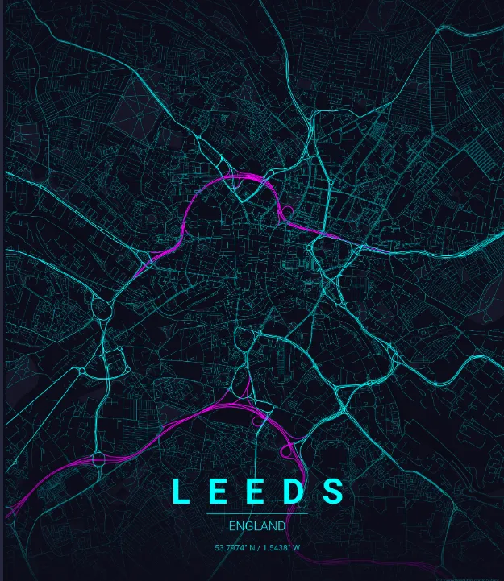
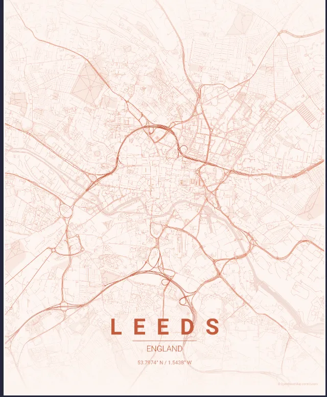
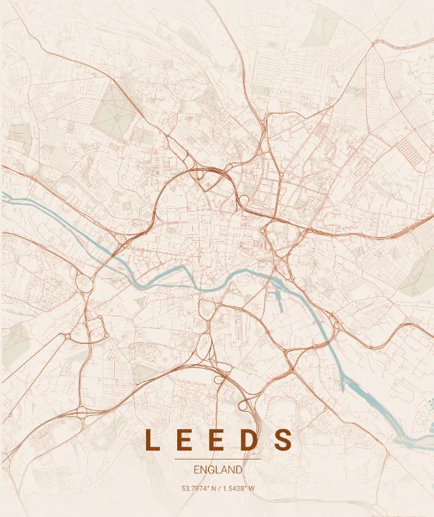
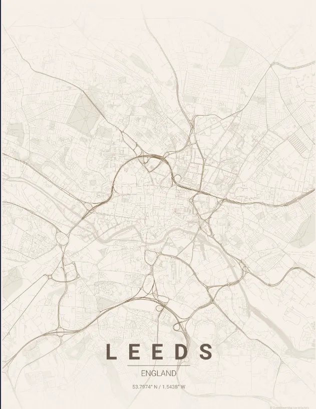

Py Leeds Poster


An automated Python pipeline that extracts live geographic vector nodes from the OpenStreetMap API and compiles a complete, print-ready art gallery of Leeds, England.
By mapping the city's complex highway rings, pedestrian grids, and the River Aire across a massive 10,000-meter radius, this project batch-renders 17 distinct, high-resolution aesthetic map designs completely automated via a single script loop.
📸Screenshots
- Example of some designs
- Neon Cyberpunk theme

- Sunset theme

- Terracotta theme

- Warm Beige theme

✨ Features
- Explicit Path Routing: Hardcoded internal virtual environment targeting ensures seamless execution on Windows systems without path distortions.
- Sequential Queue Buffer: Includes an internal 2-second cooldown delay between render iterations to prevent system RAM locks and safely manage file streams.
- Geospatial Caching: Automatically utilizes local XML coordinate caches after the first download pass, accelerating the remaining theme builds to seconds per image.
- Print-Ready Output: Automatically outputs 12" x 16" canvas scales at a crisp 300 DPI (3600 x 4800 px) straight into a dedicated output directory.
🎨 Included Gallery Themes
The pipeline loops sequentially through the following 17 official style configurations:
| Warm / Earth Tones | Dark Mode / Cyber | Cool / Stark Minimal |
|---|---|---|
🏺 terracotta |
🎛️ noir |
📐 blueprint |
🪵 warm_beige |
🌌 midnight_blue |
🧊 monochrome_blue |
🍂 autumn |
⚡ neon_cyberpunk |
🏁 contrast_zones |
🌸 pastel_dream |
🖋️ japanese_ink |
🏳️ minimal_stark |
🌲 forest / emerald |
🌊 ocean / sunset |
🏗️ copper_patina / gradient_roads |
🚀 Getting Started
Prerequisites
This project utilizes uv by Astral for lighting-fast Python environment and dependency management. If you don't have it installed yet, run this in your terminal:
# Windows PowerShell
powershell -ExecutionPolicy ByPass -c "irm [https://astral.sh/uv/install.ps1](https://astral.sh/uv/install.ps1) | iex"
Installation
Clone or open your project repository folder:
cd C:\Users\Admin\Desktop\code\py_leeds_poster
Initialize the environment and sync dependencies:
uv init --python ">=3.12"
uv add maptoposter<=0.5.0
Running the Pipeline
To execute the batch process and start your local print shop, spin up the main control script:
uv run generate_leeds.py
Note: On its very first pass, the script will pause on the terracotta theme while it queries OpenStreetMap servers for Leeds' vector infrastructure. Once the graph is cached locally, your computer will quickly generate the remaining 16 layouts.
📂 Project Architecture
py_leeds_poster/
├── .venv/ # Isolated environment containing maptoposter-cli.exe
├── posters/ # Auto-generated destination folder for your PNGs & JSON metadata
├── generate_leeds.py # Core automation loop control script
├── pyproject.toml # Environment lock configuration
└── README.md # Documentation
🛣️ Roadmap Features
[ ] Interactive CLI Prompts: Integrate an interactive menu prompt (using click or inquirer) to let users configure target city, radius, and themes dynamically without touching the code.
[ ] Multi-Location Profiles: Add a locations.json batch config file to sequentially generate poster sets for multiple global cities completely unattended in a single run.
[ ] Automated Mockup Previews: Use the Pillow library to automatically overlay the finished 300 DPI map artwork onto a framed interior stock image for instant product previews.
[ ] Print Layout Standards: Introduce padding and boundary multipliers for specific international paper sizes (A1, A2, A3) to lock in precise aspect ratios for printing.
[ ] Parallel Processing Engine: Upgrade the loop to use Python's concurrent.futures multiprocessing, allowing the engine to utilize multiple CPU cores and render multiple themes at the same time.
📜 Acknowledgments
- Map compilation engine powered by the maptoposter library interface.
- Geographic data provided open-source by OpenStreetMap contributors via Nominatim API.
- Built by Roy Peters 😁